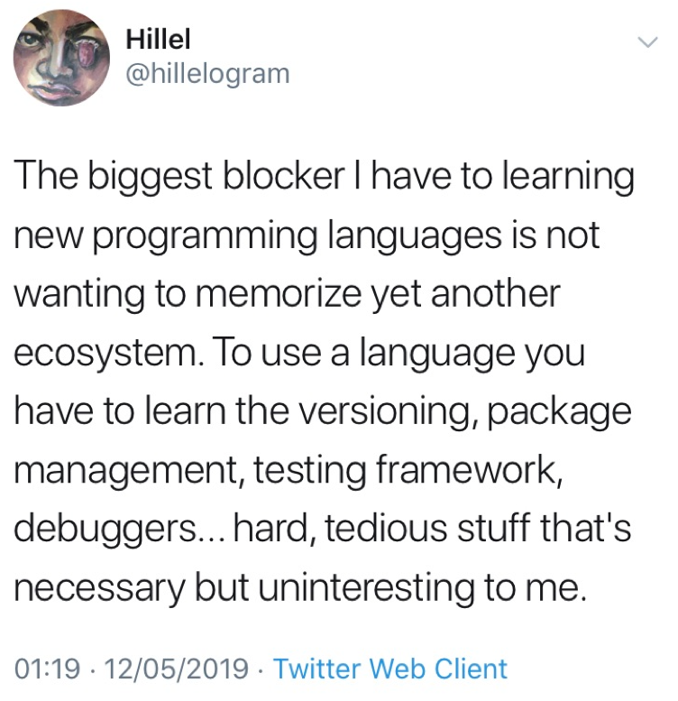

I’ve now been working in the Newcastle Data Science hub for a little over a month and I wanted to blog some personal reflections, in part for me to look back on my experience of moving in to a more digital role and for analysts considering getting in to data science but would like some insight in to the change they may experience.
Having spent 2 and a half years working on publishing national statistics (whether in the form of bulletins or data on Stat-Xplore), it was time for me to try something new. I knew to develop my coding further I needed to join a team who were regularly programming and who I could learn from. There were lots of things I knew I should be doing (e.g. regularly using git, wrapping my code in to more functions), but it was really easy letting myself off the hook from doing these things. Looking in to the future, I may well be working as a statistician for the next 40 years and I need to make sure that I’m constantly improving my skills.
Imposter syndrome is real
This is something I struggle with whenever I start a new job, regardless of what I was expecting/hoping for, and as such I’ve been trying to keep it in check this time. I had a decent idea that I would be challenged more in terms of programming, especially as Aleks (and others) would be reviewing any code I’d written, and that sometimes these challenges would feel a bit daunting, but that I’d eventually puzzle them out. In spite of this I still had moments where I worried that I simply wasn’t good enough to be on the team, so I’ve tried to be as kind to myself as possible and not put great expectations on my shoulders.
Ultimately, imposter syndrome is something loads of us (especially women) go through but what does help is accepting that this is just a thing I go through and eventually these feelings (mostly) pass and if my code isn’t up to scratch, it’ll be picked up during code reviews (as scary as that also is), and my team members will help me improve.
Mathematical equations
I love using maths to try and describe and predict the world around us. One of my favourite things at university was taking ecology and learning long mathematical equations which described phenomenon such as predator-prey interactions. When producing official statistics, this doesn’t come in to play much, so I was pleased to be asked to start working on forecasting methodologies, having not had the chance to employ this knowledge in a while.
Having talked about imposter syndrome above, I don’t tend to get it when grappling with mathematical theories. I try to tell myself that these things are known for being really complicated, and that most people have to grapple with them for a little while before they understand them except for a handful of super brainy people and those are in limited supply so my attempts will still make a useful contribution.
I’ve been really enjoying applying some of this knowledge again and also seeing that although it had been a couple of years that the hard work I’d put in during my degree was still helping me out today.
Working in agile
I had a rough grasp of what agile involved but its only since I started working in this way that I began to perceive the true value in it. My team works in two week sprints, and at the end of these we have a retrospective where we each talk about what went well and what we found difficult. We also have a team stand-up every day, where everyone shares what they did yesterday and what they plan to do today. I find these sessions so useful as I don’t always like randomly bringing up work issues I encounter and these regular sessions give me a great space to share my thoughts with my team without having to worry that I’m interrupting their day. It also forces the team to act as a team everyday, something which can get lost in analytical work where things can become quite siloed, as we have to come together as a team and share what we’re up to. I think going forward I might try and implement a daily stand up whether or not my team works in agile, as I think that 15 minute chat is really valuable.
R AND Python
The team I’ve joined works by breaking concepts into small, modular, reusable parts which can then be assembled together to fulfil different goals. This means that the team can use many programming languages, so we don’t need to trouble ourselves with R vs Python, and can have the best of both worlds.
However, the majority of my team works in python and as the team shifts and we develop new ways of working, I do need to pick up some python. Overall, I’m definitely really pleased about this, and I can see how some data manipulation problems I’ve faced in the past would have been far easier to solve in python and I am certain it will make me a better programmer. All that being said, it’s really hard learning a new language for all the reasons this tweet lists. I had half hoped that I could just memorise a new syntax and just be on my way, but taking one look at a Jupyter Notebook I realised that the challenge goes beyond new code.

The good news is that I have a whole team of people to learn from, through code reviews and pair coding.
Final thoughts
I’ve already noticed improvements in my programming just in the last couple of weeks and although moving roles has felt like quite a significant change I’m excited to be learning new skills and to be challenged in new ways.
I’m going to try and write another post when I’ve had around 6 months in the team as I think it will be interesting to see what progress I make, just for my own interest.